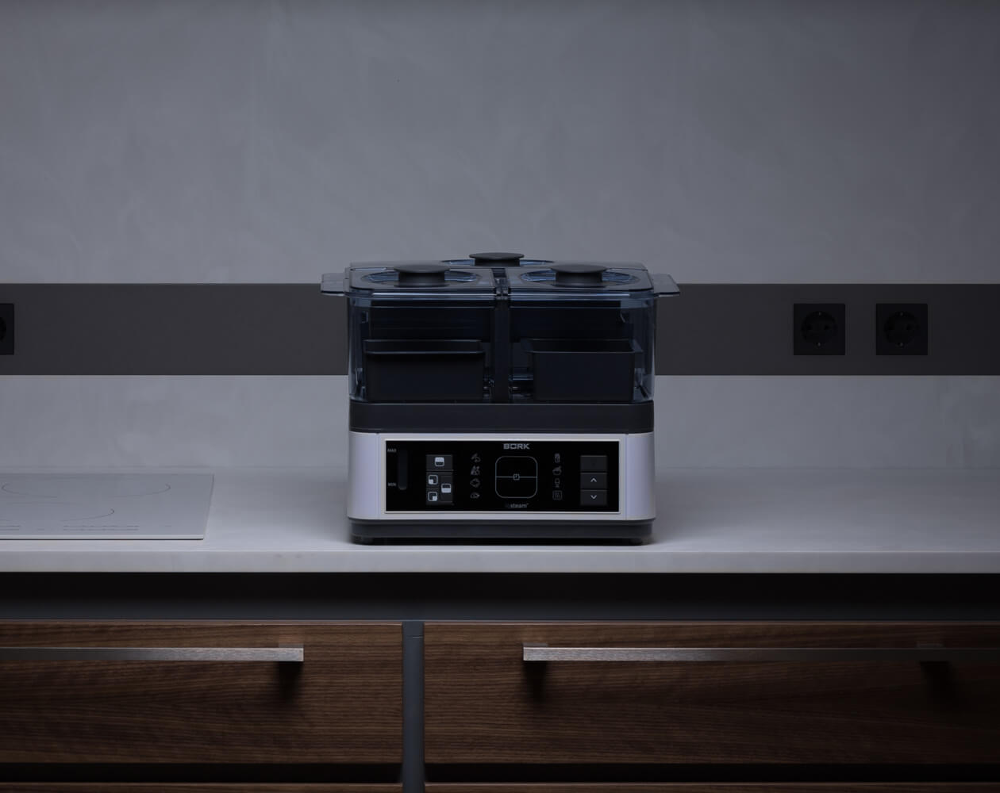
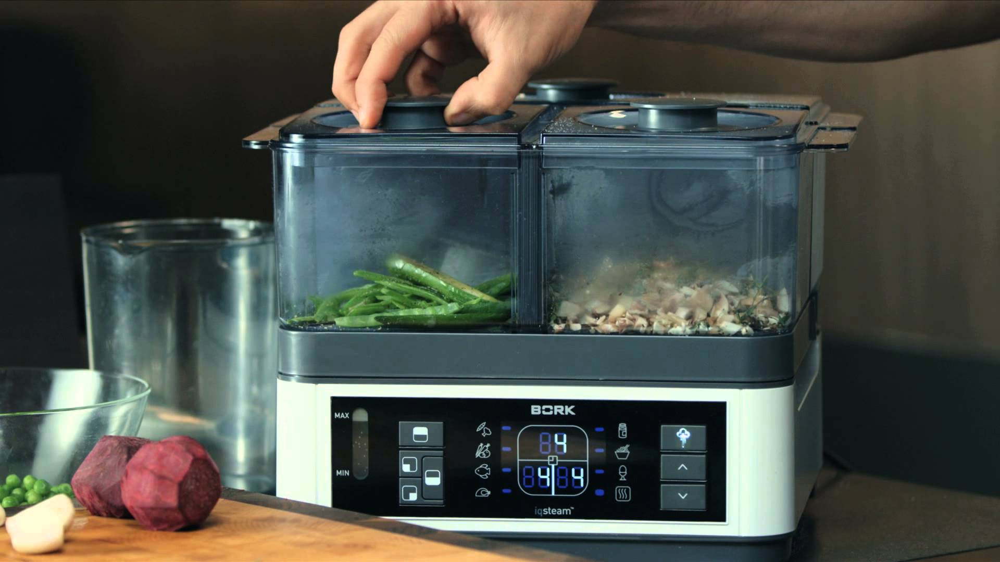
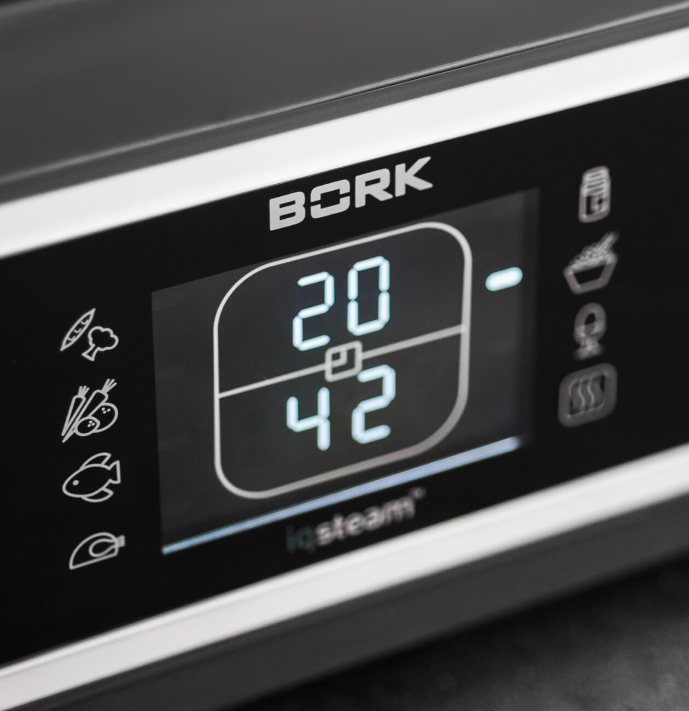
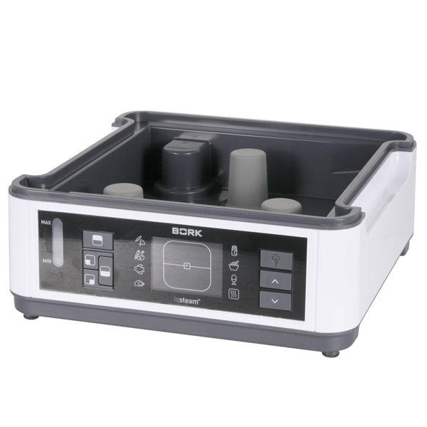
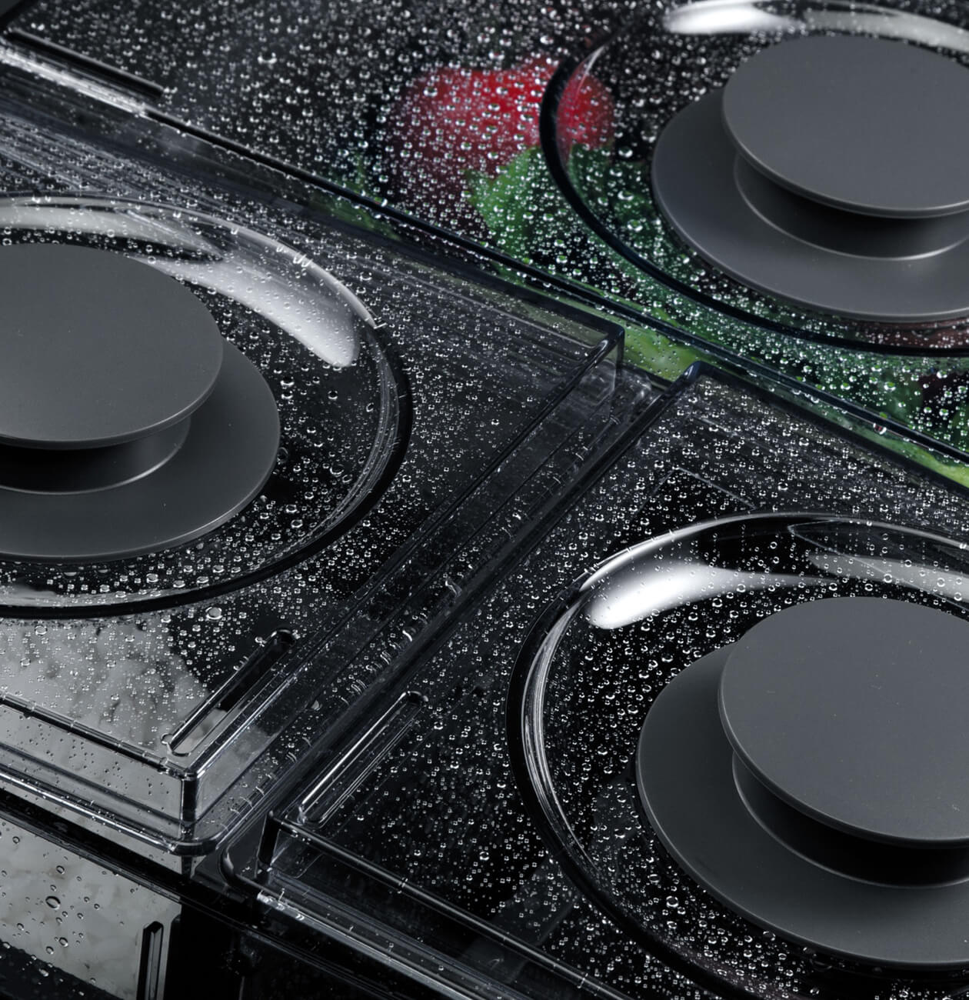
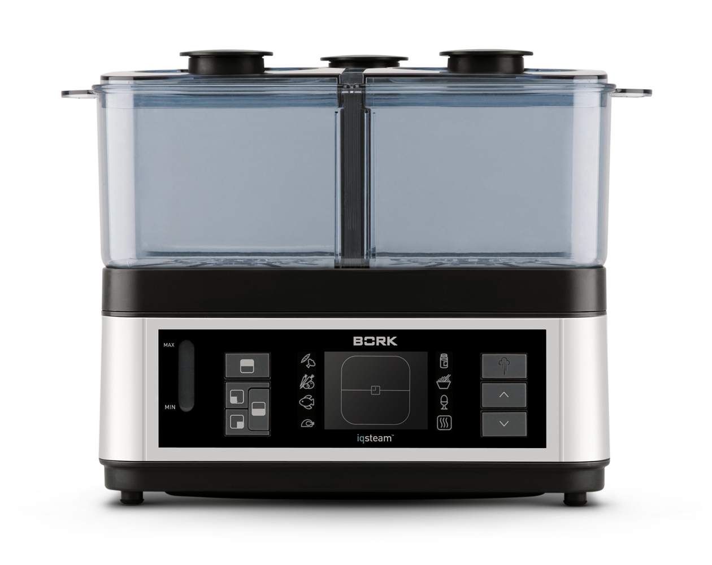
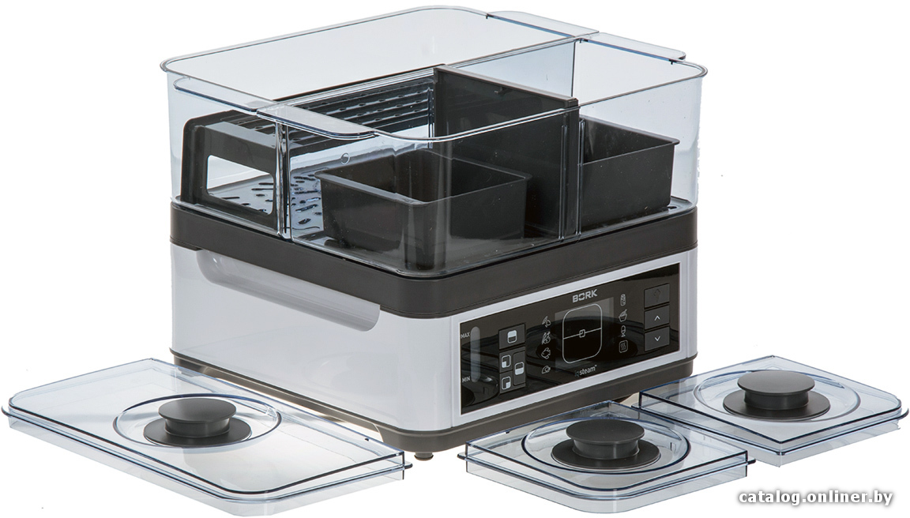

Пароварка F700
Умный помощник для одновременного приготовления 3 блюд.
Система IQ STEAM™

Уникальная конструкция с тремя раздельными зонами нагрева позволяет одновременно готовить продукты, требующие различного времени приготовления. Для каждого продукта время оптимизируется благодаря системе раздельного парообразования. Продукты, требующие наибольшего времени приготовления, автоматически готовятся в первую очередь, чтобы все блюда были готовы одновременно.
Ароматы не смешиваются
Благодаря наличию 3 нагревательных элементов, подающим пар в раздельные контейнеры (объёмом 2 л.,2 л, и 4 л.), в пароварке BORK исключается смешивание запахов от приготовляемой еды. Теперь вы одновременно можете готовить рыбу, овощи и фрукты на пару и каждое из приготовленных блюд будет иметь свой неповторимый аромат. Данная технология выгодно отличает F700 от традиционных пароварок, где происходит активное смешивание запахов, во время движения пара наверх и конденсации.
Автоматические программы
7 программ с оптимальным временем для обработки продуктов позволяют готовить вкусные и полезные блюда даже без специальных кулинарных навыков. Время, заданное по умолчанию, рассчитано для приготовления 4 порций.
- Листовые и стручковые овощи —15 минут
- Корнеплоды —35 минут
- Рыба —20 минут
- Курица —27 минут
- Соус —30 минут
- Рис —42 минуты
- Яйца, сваренные вкрутую —16 минут
Вместительный резервуар для воды
Емкость резервуара 2,5 л рассчитана на приготовление в течение 60 минут без необходимости долива воды.
Функция подогрева
По окончании цикла приготовления включается автоматическая программ подогрева, благодаря которой приготовленные блюда сохраняются теплыми в течение 40 минут. Функция идеально подходит для приготовления пищи, требующей незначительного нагрева после основной обработки, например круп.
Удобство использования

Интуитивно понятное управление, дисплей с индикацией времени и возможность долива воды в процессе приготовления обеспечивают удобство использования. Пароварка F700 сохраняет персональные настройки и оптимизирует процесс, автоматически программируя нужное время для приготовления любимых блюд.
Система безопасности
При отсутствии воды в резервуаре пароварка автоматически отключается, при этом раздается звуковой сигнал. Это предотвращает выход из строя нагревательных элементов и гарантирует максимальную безопасность использования.
Дополнительные принадлежности
В комплект входят: емкость для приготовления круп и макаронных изделий, 2 емкости для приготовления блюд в собственном соку и решетка, позволяющая размещать продукты в контейнере на двух уровнях для наиболее эффективной обработки паром. Перегородка разделяет передний контейнер на две части и позволяет готовить небольшие порции, экономя время и электроэнергию.
Технические характеристики
Мощность 1360-1600 Вт
Объем чаш 2 л, 2 л, 4 л
Число зон приготовления 3
Число программ 7
Число программ для сохранения 1
Вес 4,7 кг
Срок гарантии 1 год
Резервуар для воды 2,5 л
Приготовление без долива воды До 60 мин
Долив воды в процессе Есть
Таймер отключения 90 мин
Поддержание температуры Есть
Поддон для капель Есть
Дисплей Цифровой
Длина кабеля 1 м
Материал корпуса Пластик
Страна производства Китай